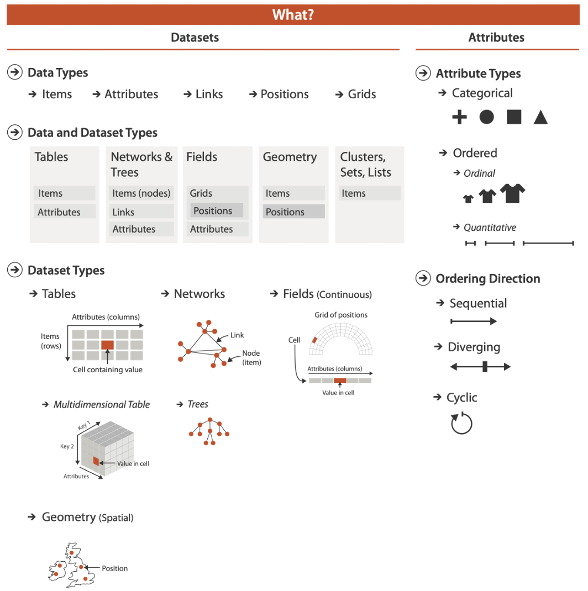

SUMMARY
A key feature of this course is that students should be using their own data whenever possible. This is critical to forging a learning experience that is customized to each student’s aspirations and the eccentricities of their chosen research domain. This assignment begins the process of helping you identify the data sets with which you want to work, and aligns with the notion of understanding the concepts of Data Semantics and Data Abstraction.
ASSIGNMENT
The basic structure of this assignment is for you to identify, import, describe, and host a data set. I’ll break down the specifics for each of these actions below.
Identify a Data Set
The main criteria is that the data set has to matter to you in some way. Often, this will mean that it is your data set. It was collected by you and has a central role in your current or past graduate research. Awesome! Another scenario is that the data you want to use comes from your current job. Maybe it isn’t part of a research project, but you are motivated to learn how to better visualize the data or you are very interested in learning more about it. Also Awesome!
Some of you might not have your own data. Perhaps you have just started your graduate training. Maybe your job doesn’t yet have data that you need to work with. No Problem!
It is perfectly fine to find publicly available data sets online. As long as the data set is interesting to you! You just need to make sure that the data:
- Are publicly available.
- Are not restricted by some kind of license or copyright.
- Do not contain private information.
- Are not covered by HIPPA, FERPA, CMMC, or other federal regulations related to data.
If you need help finding a data set, just let me know.
Some fun potential categories for data sources include:
- Sports Analytics from your favorite sport or team.
- Publicly available genomics data bases.
- Keggle.
- The movie data base.
- Classic data sets from your field.
Import the Data Set
This one is probably straightforward if your data set comes from your own research and lives on your local hard drive already.
Describe the Data Set
This is the bulk of the assignment. I want you to use the framework described in Dr. Munzner’s textbook to understand your data set and describe it to someone who is unfamiliar with your work. The basis of this approach is descibed in this lecture. In addition, this figure from the textbook summarizes the kinds of data types, data set types, and attribute types you might have in your data:

BONUS OBJECTIVE: Host your Data Set
Ultimately, we are moving toward each of you hosting your assignments within an online repository that can serve as your data science portfolio. For this course, we are going to assume this is GitHub. At the very least, I want everyone to create (or dust off and log in to) your own GitHub account. We’ll try to use this assignment to set up a project repository, and perhaps even a simple web site using GitHub pages.
RESOURCES
A YouTube Video from Posit on Building your Data Science Portfolio
A fun Spotify example from TidyTuesday by Kaylin Pavlik.
Barrie attempts this assignment in Tutorial 4.